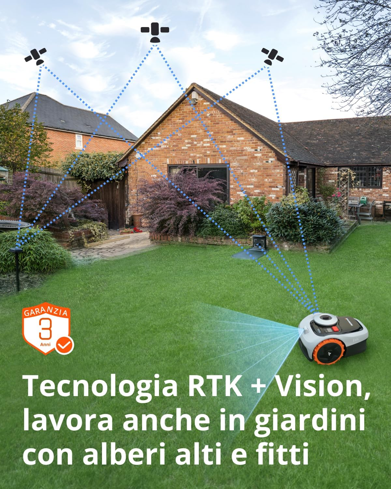
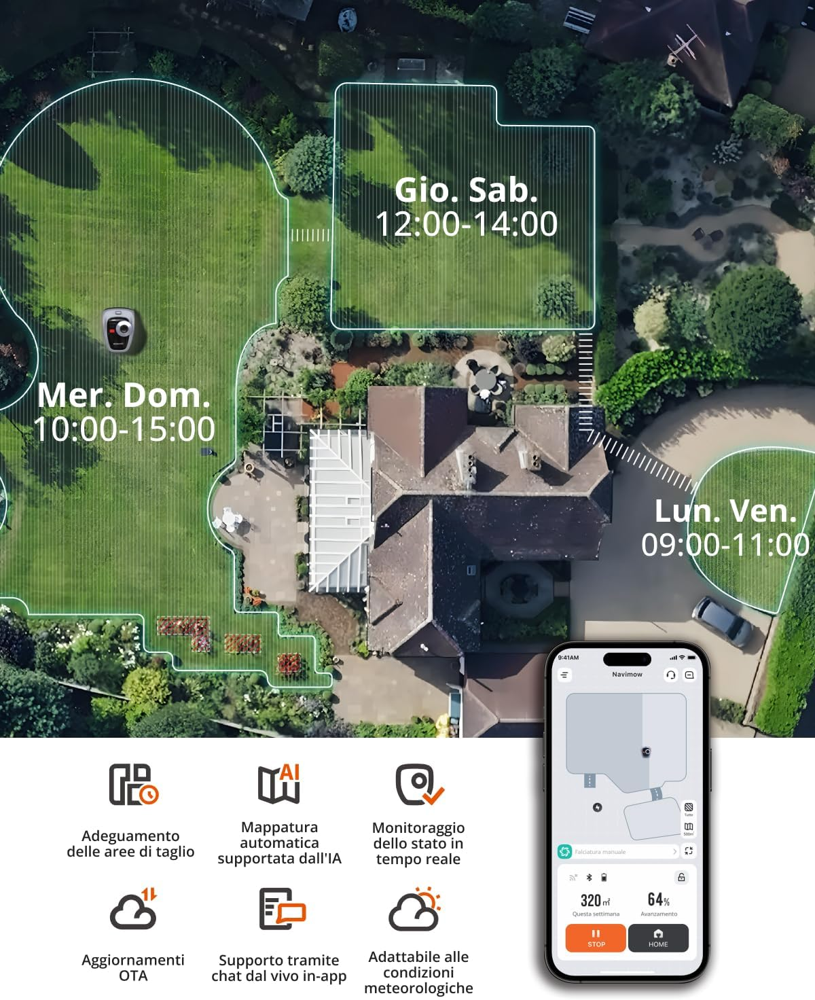

Come funziona davvero il Segway Navimow i105E e per chi ha senso

Il Segway Navimow i105E non è solo un robot rasaerba senza filo: è un sistema pensato per mantenere il prato in ordine con una logica diversa da quella tradizionale.
Molti leggono “wire-free” e immaginano una comodità assoluta, quasi magica: si appoggia il robot sul prato e lui capisce tutto da solo.
Il Segway Navimow i105E non funziona così, e capirlo subito aiuta a valutarlo con maggiore lucidità.
Il suo vantaggio principale non è soltanto l’assenza del cavo perimetrale, ma il fatto che sostituisce la logica del perimetro fisico con una logica di localizzazione e mappatura.
Non gira a caso: lavora seguendo una mappa del giardino
Nel sistema Navimow entrano in gioco il robot, la stazione di ricarica, un’antenna GNSS e l’app di gestione.
Robot e antenna ricevono segnali satellitari; la stazione ricarica il robot e aiuta a migliorare la precisione di posizionamento; l’app è il centro di controllo da cui si impostano aree di lavoro, parametri e monitoraggio.

Questo rende il i105E molto diverso dai robot più vecchi, che spesso lavorano in modo meno ordinato e si affidano al cavo per capire dove fermarsi.
Il Navimow, invece, costruisce una geometria del prato e lavora all’interno di quella geometria. In altre parole, non taglia “alla cieca”.
Il cuore del sistema: EFLS 2.0
Segway chiama la propria tecnologia di localizzazione EFLS 2.0, cioè Exact Fusion Locating System 2.0.
Dietro questo nome c’è un’idea concreta: non affidarsi a una sola fonte di posizionamento, ma unire più informazioni insieme.
Il robot usa segnali satellitari, sensori di bordo e supporto visivo per capire dove si trova e muoversi con maggiore precisione anche in contesti domestici non perfetti.
Significa che il robot non “vede” il giardino come un semplice rettangolo verde. Cerca punti di riferimento, registra l’ambiente e usa queste informazioni per orientarsi meglio.
Perché questa tecnologia ha senso soprattutto nei giardini residenziali
Tutta questa parte tecnica diventa utile soprattutto in prati con passaggi, aiuole, bordi curati, alberi o zone separate.
In un giardino semplice, anche un robot basilare può sembrare sufficiente. Ma quando lo spazio comincia ad avere forme meno banali, la precisione conta molto di più.
Il i105E nasce proprio per questo tipo di contesto: non per superfici enormi, ma per giardini di casa dove il prato fa parte di uno spazio vissuto.
La superficie ideale: qui si capisce se è davvero adatto
Il Navimow i105E è consigliato per 500 m² e ha una superficie massima dichiarata di 600 m².
Questo dato va letto nel modo giusto. Non significa che a 601 m² smette di funzionare, ma che è stato progettato per dare il meglio su prati medio-piccoli, dove autonomia, frequenza di taglio e tempi di ricarica restano in equilibrio.
Chi ha un prato da 250 o 350 m² può trovare questo modello particolarmente comodo, perché permette una manutenzione continua con poca fatica organizzativa.
Chi invece ha una superficie vicina al limite dovrebbe valutare anche forma del prato, numero di zone e presenza di ostacoli.
I numeri tecnici che raccontano il suo carattere
Il i105E ha una larghezza di taglio di 18 cm, altezza regolabile da 20 a 60 mm e una rumorosità contenuta, pensata per un uso domestico discreto.
Questi valori suggeriscono una filosofia precisa: non è un robot costruito per recuperare un prato trascurato da settimane, ma una macchina da mantenimento regolare.

In pratica, lavora bene quando il prato viene seguito con continuità. Più che “intervenire”, accompagna la crescita dell’erba.
Pendenze, bordi e limiti da leggere senza illusioni
Il Navimow i105E può affrontare pendenze fino al 30% all’interno dell’area di lavoro, mentre sul bordo il limite è più contenuto.
Questo significa che può cavarsela bene in molti giardini domestici, ma non va immaginato come una macchina per terreni estremi o fortemente irregolari.
È adatto a superfici civili, con una struttura del prato ragionevole e una gestione ordinata di bordi e ostacoli.
Per chi è una scelta davvero sensata
Il Segway Navimow i105E ha senso per chi vuole evitare i lavori invasivi di installazione, ha un giardino residenziale medio-piccolo e preferisce gestire il prato con una logica digitale tramite app.
È una buona scelta per chi desidera ordine, regolarità e silenzio, più che prestazioni “da recupero”.
Per chi invece potrebbe non essere ideale
Non è il modello più logico per chi ha un prato molto vicino o superiore ai limiti dichiarati, né per chi lascia crescere l’erba troppo a lungo e vuole poi sistemare tutto in poco tempo.
Può essere meno adatto anche in giardini molto ombreggiati, con ostacoli mobili continui o bordi difficili da interpretare.
Conclusione
Il Segway Navimow i105E ha senso quando il proprietario del giardino cerca continuità, ordine e una manutenzione intelligente.
Non è una macchina per chi vuole intervenire ogni tanto come farebbe con un rasaerba tradizionale. È più simile a un sistema di mantenimento costante, pensato per chi preferisce un prato sempre curato senza doverlo rincorrere.